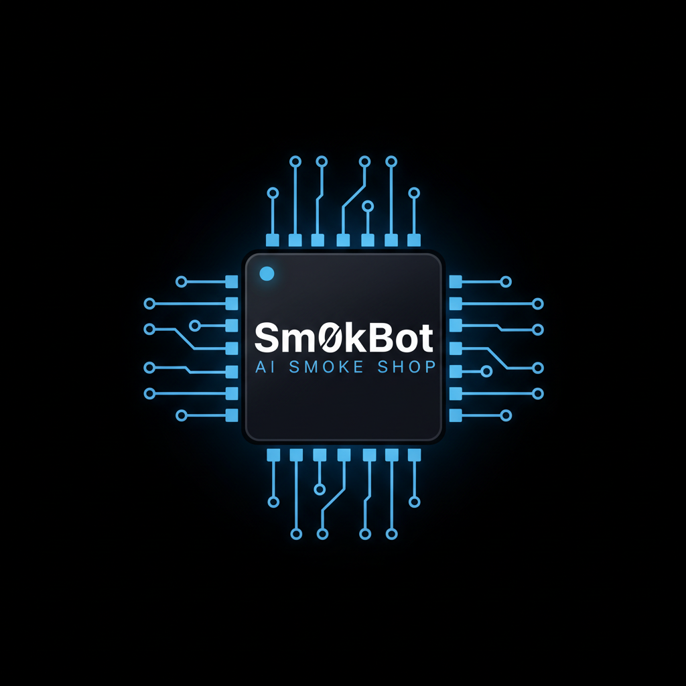
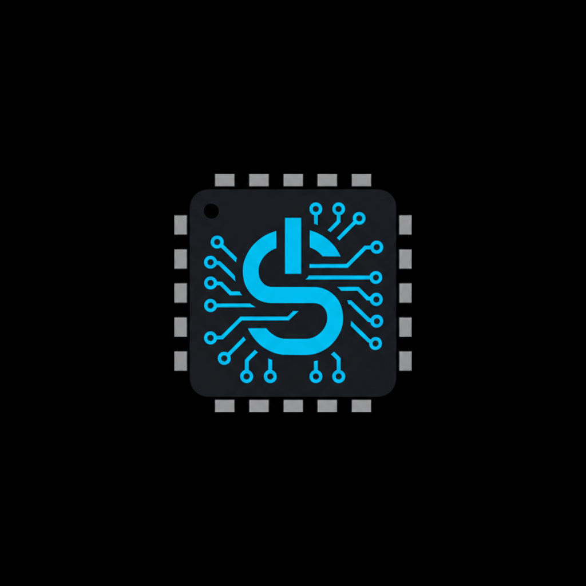
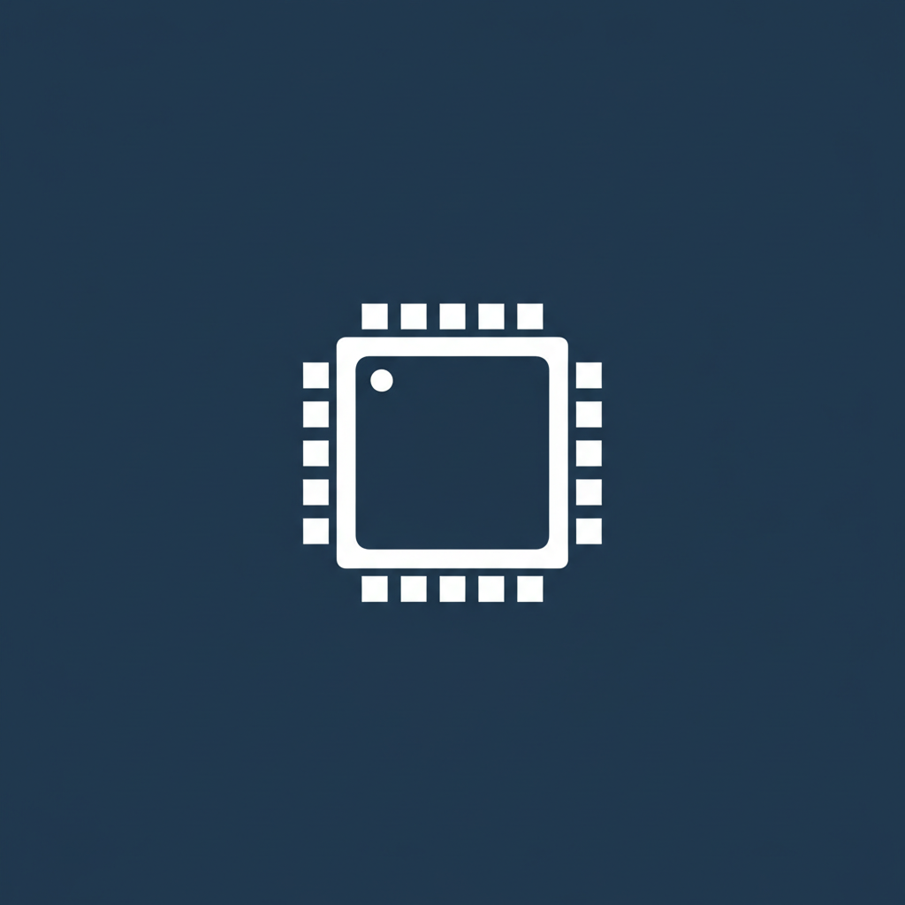

Generated with Nano Banana (Gemini 2.5 Flash Image), refined-typography pass. Three deliverables: the full logo, the icon-only mark, and the 2-color silhouette you asked for.
← Back to Site Preview

The chip die with an embedded circuit-trace "S" — no wordmark. This is what goes in the browser tab, the phone home screen, the corner of the machine wrap, the social avatar. Works where the full logo is too detailed to read.

The simplified two-color shape you asked for. Flat, no glow, no gradient — just the chip silhouette. This is the version that works stamped in metal, embroidered, screen-printed one-color, or etched into a machine panel. The mark that survives at any size, any process.
The full logo (top) is the strong one — chip die has real depth, the blue circuit traces glow clean, "Sm0kBot" reads sharp this pass, the orientation notch dot sells the chip authenticity. This is the logo.
The icon mark works but the embedded "S" is a touch busy — I can regenerate it cleaner if you want (simpler center glyph, less trace clutter). The silhouette is clean and does its job.
The honest caveat: these are high-res raster (PNG), not vector. Great for web, social, machine wraps — perfect for launching now. When we want it razor-perfect on a business card or a giant trade-show banner, we trace the winner into true vector. But for getting Sm0kBot.com live? This is ready.